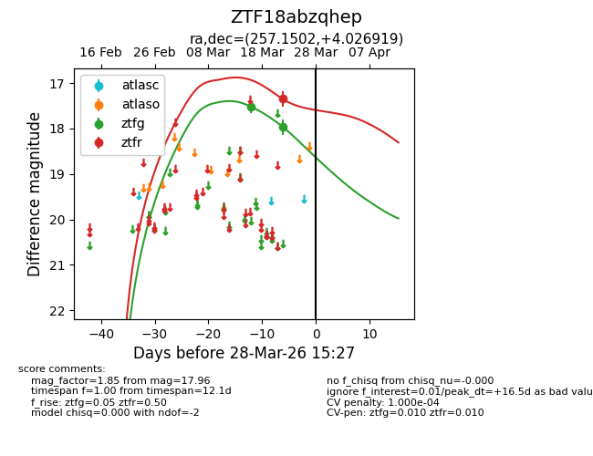
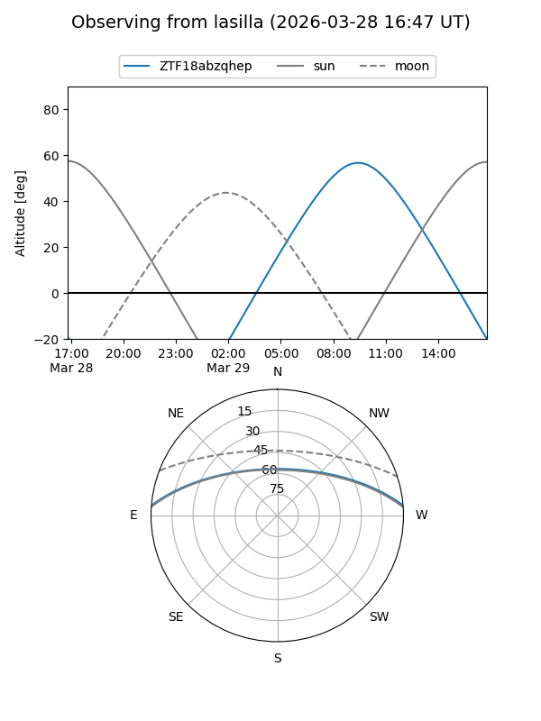
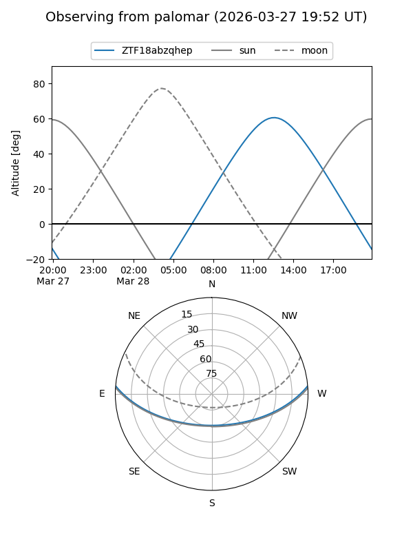
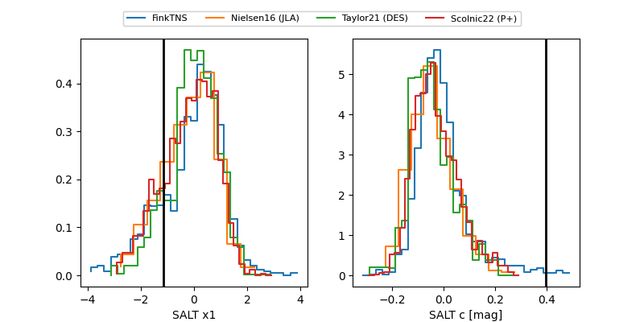

ZTF18abzqhep
Target ZTF18abzqhep at 2026-03-28 15:30
Aliases and brokers:
FINK: link
Lasair: link
ALeRCE: link
alt names
ZTF18abzqhep (ztf,fink_ztf)
Coordinates:
equatorial (ra, dec) = 257.1502,+4.02692
equatorial (HMS+DMS) = 17:08:36.05,+04:01:36.91
galactic (l, b) = (24.4010,+24.65475)
Flags:
likely cv
Photometry:
last ztfg=17.96, ztfr=17.35
2 ztfg, 1 ztfr detections
Lightcurve

Visibility


Additional plots
